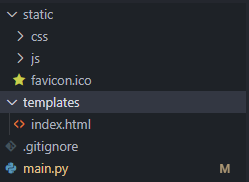
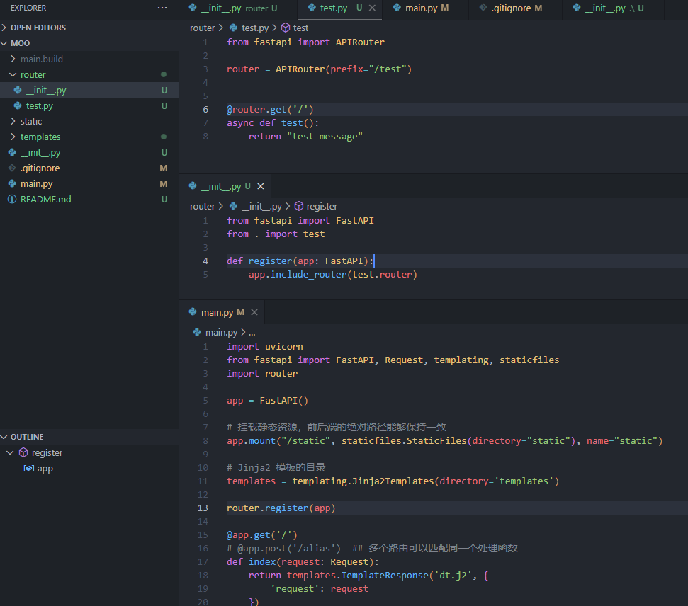
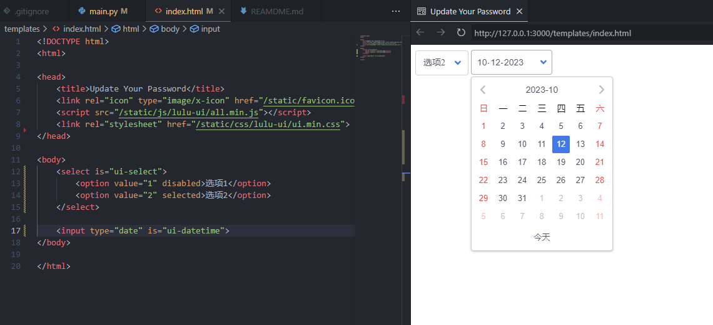
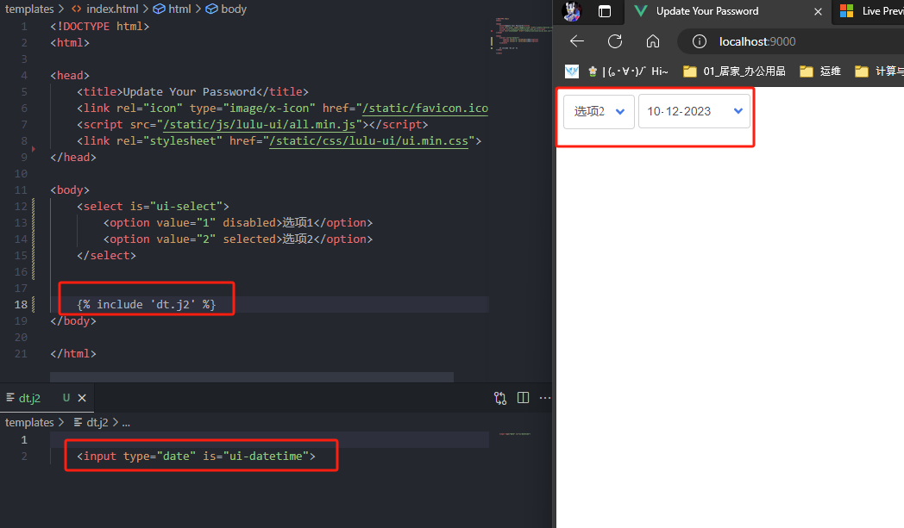
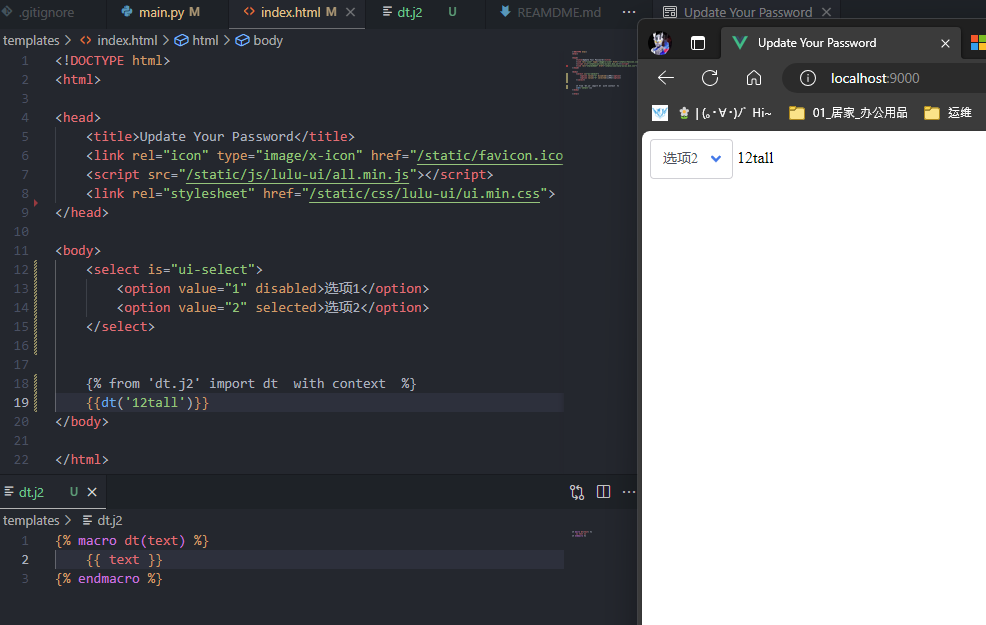
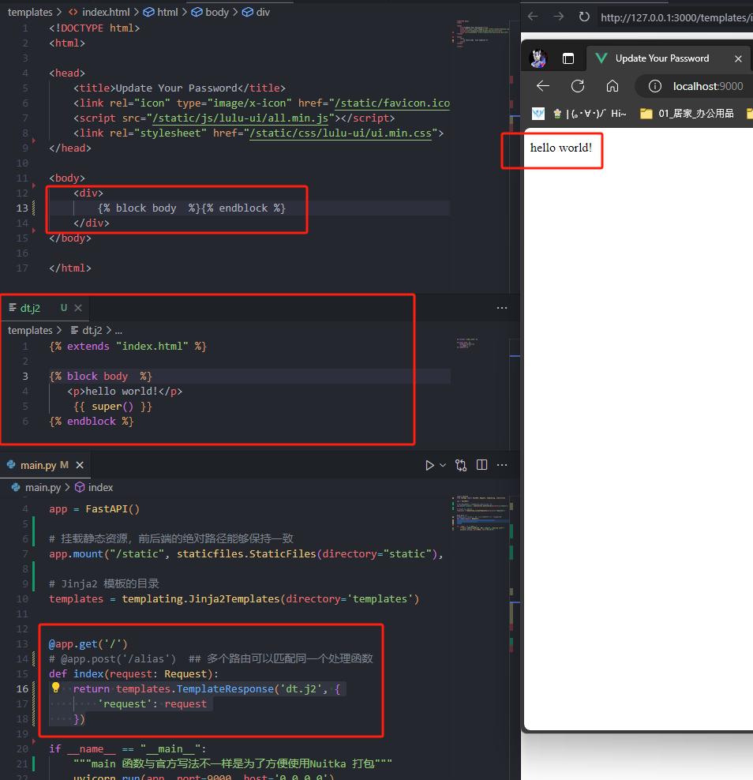
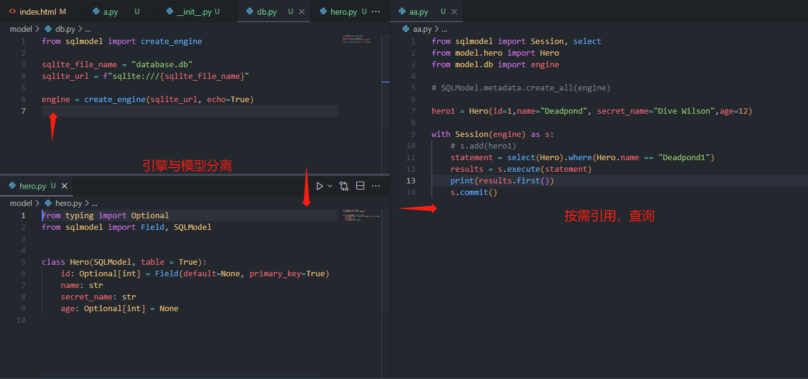
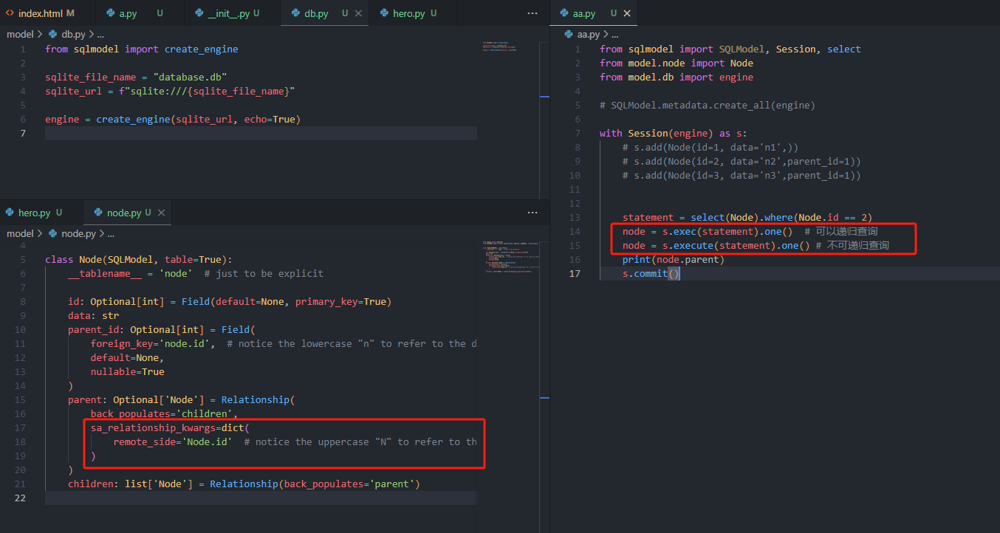

FastAPI 工程化
从asp.NET 到前后分离，到vue+koa2，兜兜转转又到了模板渲染。以前开发看逼格，现在开发看速度。SSR 有啥不好的，又不是不能用只要把内容展示出来就好了呗。
FastAPI
Koa2 有各种灵活的插件，FastAPI 继承了路由和参数解析的功能，并且还附带了文档的功能，这样省了接口测试的功夫。并且如果配合Jinja2 和lulu-ui 完全能做出不错的页面出来。下面是一个最基本的后端代码：
import uvicorn
from fastapi import FastAPI, Request, templating, staticfiles
app = FastAPI()
# 挂载静态资源，前后端的绝对路径能够保持一致
app.mount("/static", staticfiles.StaticFiles(directory="static"), name="static")
# Jinja2 模板的目录
templates = templating.Jinja2Templates(directory='templates')
@app.get('/')
# @app.post('/alias') ## 多个路由可以匹配同一个处理函数
def index(request: Request):
return templates.TemplateResponse('index.html', {
'request': request,
'warning_text': 'hello world'
})
if __name__ == "__main__":
"""main 函数与官方写法不一样是为了方便使用Nuitka 打包"""
uvicorn.run(app, port=9000, host='0.0.0.0')项目的文件结构如下：

这样组织static 文件夹，可以让前后端引用js 的路径一致，便于开发时预览页面效果。
路由
FastAPI 的路由写法还不算反人类，只是需要很多的import，不过要注意路由匹配顺序是自上而下的
from . import ***这种写法不能用在main模块中，不然会报错

中间件
FastAPI 中间件本质上是一个异步函数，包含
request, call_next两个参数。
中间件可以在main 模块定义：
@app.middleware("http")
# 必须用 async
async def add_process_time_header(request: Request, call_next):
start_time = time.time()
# 必须用 await
response = await call_next(request)
process_time = time.time() - start_time
# 自定义请求头
response.headers["X-Process-Time"] = str(process_time)
# 返回响应
return response也可以在单独的文件中定义（此方法的执行效率似乎更高一些）：
import time
from fastapi import Request
class TimerMiddleware:
def __init__(
self,
attrs
):
self.attrs = attrs # 一些可选的属性数据
async def __call__(self, request: Request, call_next):
start_time = time.time()
# 必须用 await
response = await call_next(request)
process_time = time.time() - start_time
# 自定义请求头
response.headers["X-Process-Time"] = str(process_time)
response.headers["X-Attrs"] = self.attrs
# 返回响应
return response使用app.add_middleware 启用中间件：
from fastapi import FastAPI, Request, templating, staticfiles
from middleware.mw import TimerMiddleware
from starlette.middleware.base import BaseHTTPMiddleware
app = FastAPI()
app.add_middleware(BaseHTTPMiddleware, dispatch=TimerMiddleware("attrs"))也可以让中间件类直接继承BaseHTTPMiddleware，但是这样似乎会存在一些内存泄露的问题。参见How to write a custom FastAPI middleware class。所以还是有必要像路由一样统一管理中间件。
前端
前端采用lulu-ui，因为他采用的是is 方法重新定义组件，相比于vue 或者其他框架来说，它的用法更接近于原生的html+js+css。所见即所得：

不太好的地方是后端通过表单获取数据时写法有点复杂，但是可以通过拦截submit 或者其他的手段来曲线救国。
Jinja2
虽然专业的前端设计很漂亮，但是打包工具未免也太复杂了些。而后端渲染的方式简单粗暴，深得我心。尤其是jinja2 既可以实现继承（extend）又可以实现组件化（import/include）。看起来也还挺方便的，只是还不知道使用起来感觉怎么样。
- 通过
include导入模板文件
 - 通过
import导入模板文件的部分内容
 - 通过
extends继承模板文件

数据库
一般的教程都会推荐SQLAlchemy，但是这个框架着实不好理解。好在FastAPI 的作者基于SQLAlchemy 封装了一个新的库SQLModel，和其他静态语言的数据库组件设计思路很像。如果不考虑数据库迁移的的话，模型和引擎可以不定义在同一个文件中。

并且支持SQLAlchemy 的查询语法：
from sqlmodel import SQLModel, Session, select, func, desc
from model.node import Node
from model.db import engine
with Session(engine) as s:
statement = select(Node.id,
Node.data,
func.count(Node.parent_id).label('count')
).group_by(
Node.parent_id
)
nodes = s.exec(statement)
print(nodes.all())
s.commit()定义树状的数据结构：
from typing import Optional
from sqlmodel import Field, Relationship, Session, SQLModel, create_engine
class Node(SQLModel, table=True):
__tablename__ = 'node' # 显式声明数据表
id: Optional[int] = Field(default=None, primary_key=True)
data: str
parent_id: Optional[int] = Field(
foreign_key='node.id', # 小写的n 表示外键连
default=None,
nullable=True
)
parent: Optional['Node'] = Relationship(
back_populates='children',
sa_relationship_kwargs=dict(
remote_side='Node.id' # 大写的N 表示本表中的字段
)
)
children: list['Node'] = Relationship(back_populates='parent')递归查询：可以通过remote_side 来实现自递归，项目结构如下：

异步
参考Add documentation about how to use the async tools (session, etc)。 或者FastAPI with Async SQLAlchemy, SQLModel, and Alembic：
import os
from sqlmodel import SQLModel, create_engine
from sqlmodel.ext.asyncio.session import AsyncSession, AsyncEngine
from sqlalchemy.orm import sessionmaker
DATABASE_URL = os.environ.get("DATABASE_URL")
engine = AsyncEngine(create_engine(DATABASE_URL, echo=True, future=True))
async def init_db():
async with engine.begin() as conn:
# await conn.run_sync(SQLModel.metadata.drop_all)
await conn.run_sync(SQLModel.metadata.create_all)
async def get_session() -> AsyncSession:
async_session = sessionmaker(
engine, class_=AsyncSession, expire_on_commit=False
)
async with async_session() as session:
yield session
################################################################################
from fastapi import Depends, FastAPI
from sqlmodel import select
from sqlmodel.ext.asyncio.session import AsyncSession
from app.db import get_session, init_db
from app.models import Song, SongCreate
app = FastAPI()
@app.on_event("startup")
async def on_startup():
await init_db()
@app.get("/ping")
async def pong():
return {"ping": "pong!"}
@app.get("/songs", response_model=list[Song])
async def get_songs(session: AsyncSession = Depends(get_session)):
result = await session.execute(select(Song))
songs = result.scalars().all()
return [Song(name=song.name, artist=song.artist, id=song.id) for song in songs]
@app.post("/songs")
async def add_song(song: SongCreate, session: AsyncSession = Depends(get_session)):
song = Song(name=song.name, artist=song.artist)
session.add(song)
await session.commit()
await session.refresh(song)
return song 另外，一个好玩的点：
from typing import TYPE_CHECKING
if TYPE_CHECKING:
'''
代码块里面的代码并不会被执行，但是可以为编辑器提供类型提示
'''
import libs 这篇笔记记录的都是一些可行性的问题，具体项目中的代码肯定还需要很多细节性的问题需要解决。
参考资料
- Live Preview 实时预览html 的vscode 插件
- How To Format Form Data as JSON 通过监听表单的
submit事件来自定义处理函数 - lulu-ui
- How to use macros in a included file
- SQLModel FastAPI 作者开发的ORM 库，应该是见过的最简洁的Python ORM 库了
- Pydantic 一个比较好用的数据校验工具，尤其是对于JSON 到对象、对象到对象的类型转换非常友好
- How to write a custom FastAPI middleware class
- How do I construct a self-referential/recursive SQLModel
- Aggregate functions with GROUP BY / HAVING
其实有一个问题： ORM 要不要承担创建表和数据迁移的工作呢？如果不要的话，代码的逻辑应该会非常简单；如果要的话，一不小心就会出现循环导入的问题。